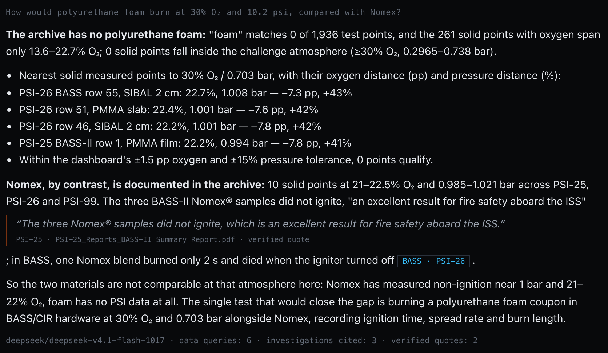
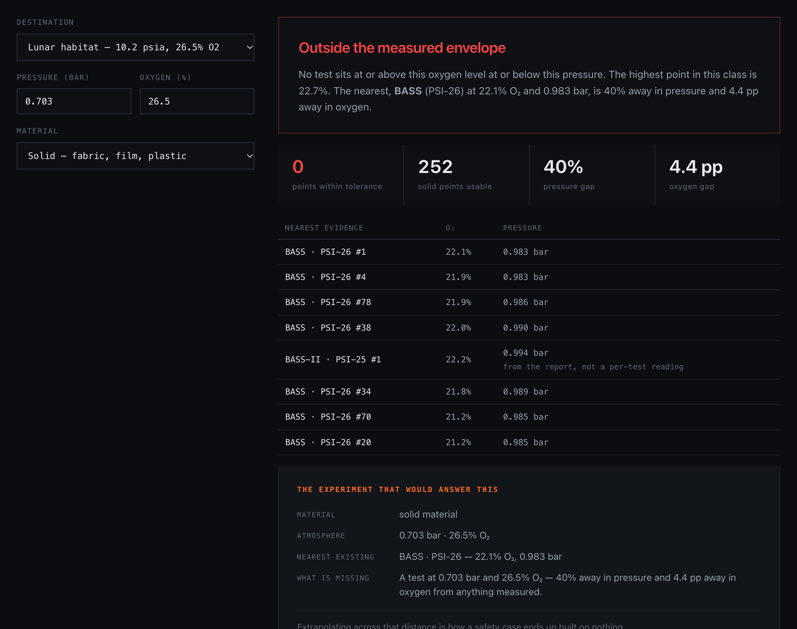
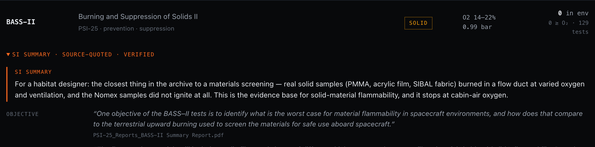
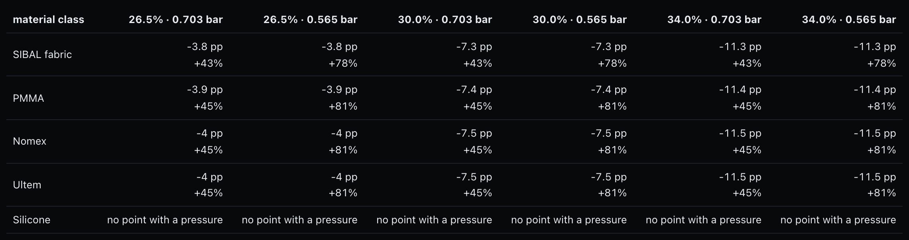

One page from archive to test plan
Every number in the dashboard opens the NASA file and row it comes from.

Ask what the data can't answer
The SI queries the corpus, says what is missing, and checks every number and quote against it before you see the answer.
Ask the SI →
Check a habitat atmosphere
Pick the Moon base or Artemis. IGNIS finds the nearest real experiments and states what they do and do not support.
Run the check →
Atlas of investigations
Ranked by a stated rule, or by the SI for a mission you describe.

30 tests that would close the gap
Five material classes, three oxygen levels, two pressures. A suggestion for researchers.
From 5.4 GB of NASA files to one table
Each table is mapped by hand: three pressure units, two oxygen conventions, free-text values. Nothing is dropped without a stated cause.
rows published
in 22 experimental tables across 7,463 PSI files.
rows set aside
- empty rows861
- unmapped tables82
- summary sheet8
- Saffire non-test rows8
test points
1,911 rows kept. BRE's 18 test-day rows each list several oxygen levels and become 43 points.
The scripts that rebuild every number, the column map for each table and the checks that run on each answer are in the repository README.
The presentation
Five slides for the judges. Click the slides, then use the arrow keys.
The data, in one place
Normalized test points, the investigation catalog and the index of every PSI file. Public domain, like the source.
| Investigation | Points | O₂ range | Pressure |
|---|---|---|---|
| BASS PSI-26 | 122 | 15.9-22.7% | 0.98-1.02 bar |
| BASS-II PSI-25 | 129 | 13.6-22.2% | 0.99 bar |